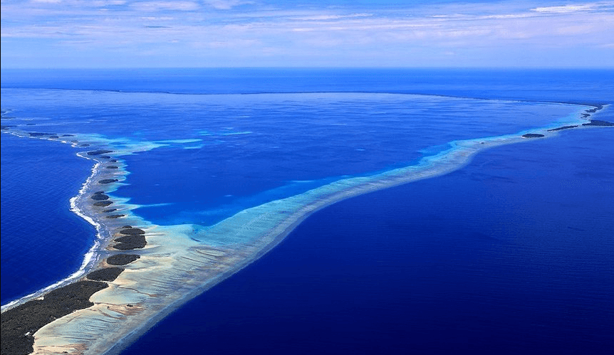
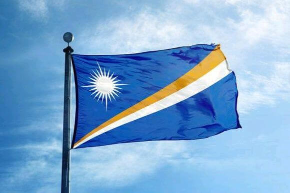

马绍尔介绍
INCLUDING
马绍尔群岛(MARSHALL ISLANDS)是密克罗尼西亚群岛最东面的岛群，位于中太平洋，大约在印度尼西亚及夏威夷的中间，占地大约七十五万平方英里。马绍尔群岛有两排互相平行、长达八百英里及相隔一百二十四英里的珊瑚岛礁及火山岛群。东面一排珊瑚岛礁叫拉达克(Ratak),意为日出;西面一排叫拉力克(Ralik)，意为日落。 人口约六万，主要是马绍尔当地人、德国人、美国人和中国人。首都是在马朱洛(MAJURO)。

马绍尔群岛注册资料
REQUIREMENT
1.需要注册的公司名称：英文为准，中文为辅;
2.董事和股东身份证明文件:护照、身份证的扫描件
3.董事和股东地址证明文件：如银行账单、电话账单、驾驶执照等扫描件;
4.注册资金：标准资金为美元50,000元，无需验资;
5.马绍尔公司注册地址：注册地址必须在马绍尔群岛。
马绍尔群岛注册优势
ADVANTAGE
1.马绍尔公司以普通法为依据，紧贴市场脉搏，深受外商欢迎;
2.马绍尔群岛共和国是全球第三大船旗国，船运业务首选;
3.马绍尔公司无需申报受益者、无需申报年利润及财务状况;
4.马绍尔公司无须呈递周年报表或经审计帐目，亦无须召开周年大会;
5.马绍尔公司税收：海外离岸马绍尔公司勿需缴税，不受外汇规定管制;
6.马绍尔公司保密度：股东及董事的信息完全保密;
7.马绍尔公司灵活度：海外离岸马绍尔公司的名称可以加中文;

马绍尔群岛注册流程
SPACIFIC PROCESS
1.填写委托书;
2.签署协议书;
3.交付预付金;
4.亲自签署法定文件;
5.到政府各部门办理手续;
6.10-15个工作日办理完毕;
7.交结;